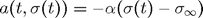

Contents
function demo_eulerIntegration_reversion2Mean
demo_eulerIntegration_reversion2Mean: Integration of ODE with reversion to the mean
Reversion to the mean
Parameters for the integration grid
T = 10; % length of integration interval N = 100; % number of integration steps
Function that gives the value of the derivative

sigma_infty = 0.1; % reversion level alpha = 1/2; % reversion rate a = @(t,sigma)(-alpha*(sigma - sigma_infty));
Integrate the ODE
% initial conditions
t0 = 0;
sigma_0 = 0.5;
[t,sigma] = eulerIntegration(t0,sigma_0,a,T,N);
Plot the results
figure(1); clf plotResults(t0,T,sigma_infty,t,sigma)
Integrate the ODE with different initial conditions
% initial conditions
t0 = 0;
sigma_0 = 0.01;
[t,sigma] = eulerIntegration(t0,sigma_0,a,T,N);
Plot the results
figure(2); clf plotResults(t0,T,sigma_infty,t,sigma)
end
Auxiliary function
function plotResults(t0,T,sigma_infty,t,sigma) plot(t,sigma); hold on reversionLevel = sigma_infty*ones(size(t)); plot(t,reversionLevel,'k','LineStyle',':'); hold off xlabel('t'); ylabel('f(t)'); legend('\sigma(t)','\sigma_{\infty}',0); axis([t0 t0+T 0 max(sigma)*1.2]) end